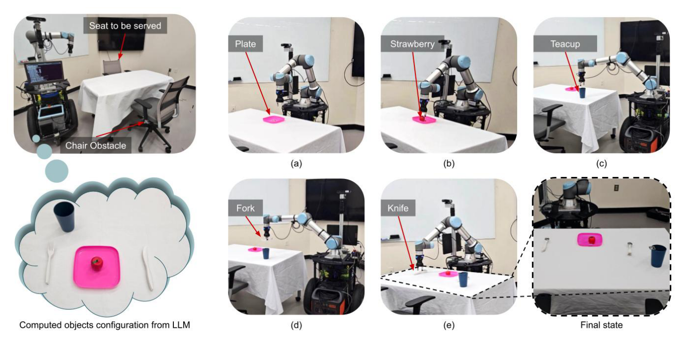
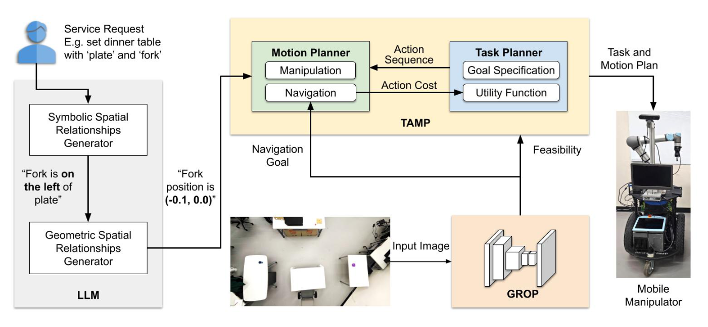
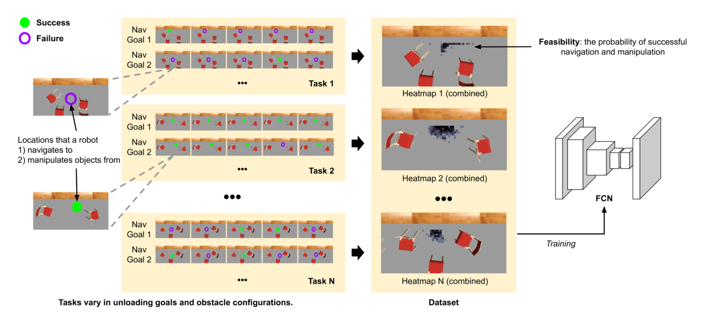
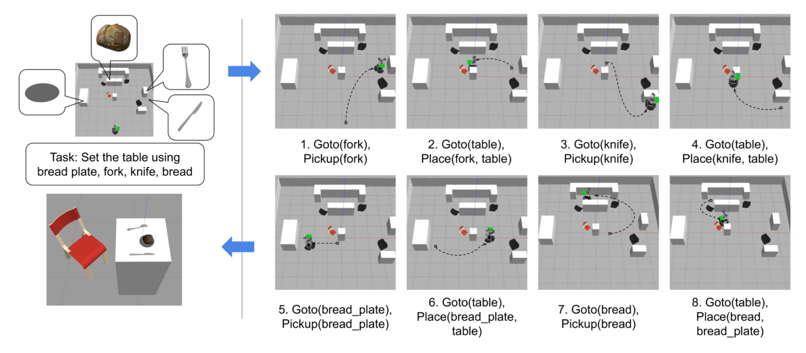
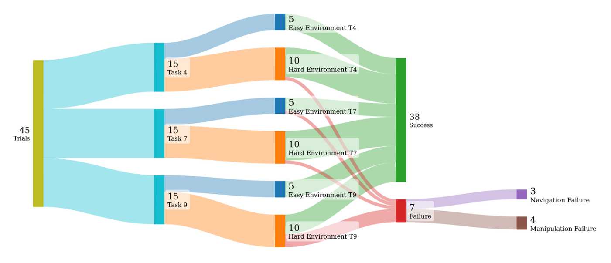
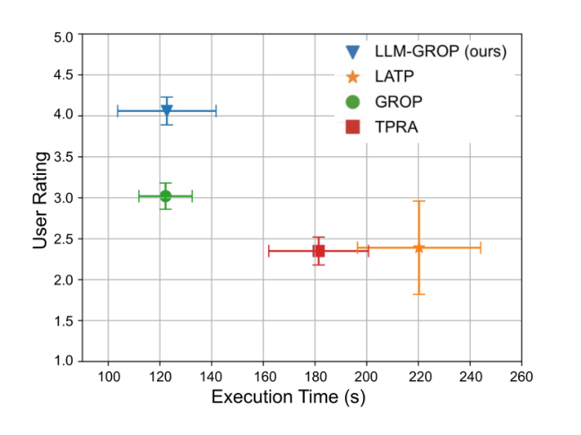
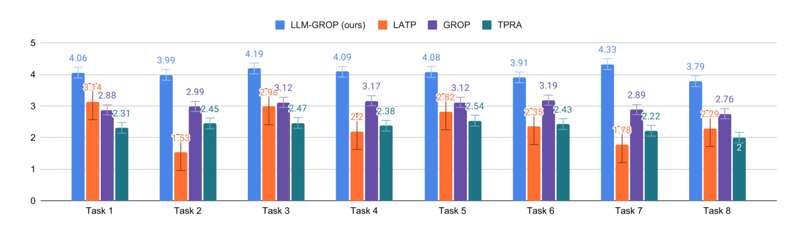

任务与运动规划 TAMP
移动操作 MoMa
LLM 常识
视觉接地
IJRR 2025 · arXiv 2511.07727
LLM-GROP：用大语言模型做视觉接地的机器人任务与运动规划
LLM-GROP: Visually Grounded Robot Task and Motion Planning with Large Language Models
Xiaohan Zhang*, Yan Ding*, Yohei Hayamizu*, Zainab Altaweel*, Yifeng Zhu, Yuke Zhu, Peter Stone, Chris Paxton, Shiqi Zhang · SUNY Binghamton / UT Austin / Sony AI / Hello Robot / 上海AI实验室 / OneStar Robotics（*共同一作）
一句话总结：给机器人下"摆一桌餐具"这种欠指定（underspecified）指令时，叉子该放盘子左边还是右边？这类问题需要常识。LLM-GROP 用 LLM 提取常识生成"符号空间关系 → 几何空间关系"的目标布局，再用 GROP 视觉组件（FCN 可行性热图）为移动操作选站立位置，联合优化可行性 + 效率，在真实移动操作机器人与仿真中完成长时程物体重排，真机成功率 84.4%，用户评分显著优于三类基线。
01摘要解读
任务规划（高层目标）与运动规划（低层可行性）是机器人两大核心问题，TAMP 把它们交织起来同时保证"目标达成 + 运动可行"。本文关注多物体移动操作（MoMa）——需交织导航与操作动作，核心是：给定"摆一桌叉刀盘"这种欠指定目标，计算每个物体放在哪、怎么放。
- 用 LLM 的常识（如餐具如何摆放）同时促进任务级与运动级规划；
- 用计算机视觉学一个"选底座位置"的策略，以支撑 MoMa 行为（底座位置 = 机器人在工作空间中的"足迹"与朝向）。
这套框架既考虑物体重排的常识，又能适应"需移动大量物体"的新情形。真机完成 84.4% 物体重排试验；主观人工评测表明机器人的表现仍低于有经验的真人服务员。
84.4%
真机物体重排成功率（45 次试验 38 成功）
U(p)=R·F−C
效用函数：可行性 F 与成本 C 联合优化
02研究背景与动机（Introduction）
欠指定目标需要常识
多物体重排（摆桌、理书架、装洗碗机）是服务机器人的日常技能。多数现有系统要求显式指令（把同色物品排成一行、摆成特定形状）；但真实用户请求往往欠指定——摆桌方式很多，有些更受欢迎。叉子为何在盘子左边、刀在右边？这需要社会约定式的常识。LLM（如 ChatGPT）恰好富含这类常识。

图 1：移动操作领域示意。移动操作机器人摆餐桌：需摆放刀、叉、盘、杯垫、马克杯等多个餐具（分散在其他桌上），环境含随机生成的障碍（如椅子，不在预建地图里）。机器人须计算语义正确的目标布局 + 重排物体的任务运动计划（含导航与操作）。
三条技术路线与本文的结合
- 传统 TAMP：多数假设完全可观测、确定性世界，只关心可行性、忽视效率；本文额外考虑机器人运动不确定性 + 任务完成效率；
- 物体重排（StructFormer、DALL-E-Bot 等）：依赖示范数据或单一俯视视角；本文零样本用 LLM 常识、支持全房间移动操作；
- 基础模型规划（SayCan、VLM-TAMP 等）：多关注语义目标；本文同时优化可行性 + 效率，并用视觉概率评估 MoMa 可行性。
关键区别：把"效率"纳入优化
当高层动作耗时很短时，TAMP 可只关心可行性；但当存在长距离导航这类耗时动作时，任务完成效率不容忽视。LLM-GROP 用
概率评估可行性，从而在"高可行但高成本"与"略低可行但低成本"之间灵活权衡——这是既有方法不支持的。
03方法详解
3.1 问题形式化
任务：把分散在多处的 N 个餐具物体重排成语义有效、符合常识的桌面布局。行动分导航动作 aⁿ（位置→位置）与操作动作 aᵐ（装载 load / 卸载 unload），通过先决条件/效果定义。不确定性体现为：导航动作在任务级确定、在运动级不确定（机器人到不了精确的 2D 目标位，因定位与驱动不完美）。
方案质量由效用函数评估：
U(p) = R · F(p) − C(p)
F(p)∈[0,1] 为计划可行性（成功执行的概率），C(p) 为执行总成本，R 为成功奖励。最优算法报告效用最高的任务-运动计划 p*。
3.2 LLM 引导的目标生成（4.1 节）
- 生成符号空间关系（Template 1）：让 LLM 输出物体间的符号关系（"叉子在盘子左边、刀在右边"）。为防止逻辑矛盾，用答案集编程（ASP）做一致性检查（如规则
:- below(X,Y), right(X,Y)），出现矛盾则重新 prompt；
- 生成几何空间关系（Template 2）：追问"物体 A 该放物体 B 左方几厘米？"，从 LLM 回复里按关键词"centimeter"提取数值（如"刀在盘右 5–7 cm"）；
- 自适应采样：以推荐位置 (x_i, y_i) 为均值做 2D 高斯采样，再用拒绝采样规则（遵守符号关系、避免重叠、不越桌面边界）筛选出 M 个可行配置序列。
3.3 视觉接地的 TAMP（4.2 节，核心组件 GROP）

图 2：LLM-GROP 总览。两个关键组件：LLM（生成餐具间的符号与几何空间关系）+ 任务运动规划器（据 LLM 信息生成执行计划）。关键子组件 GROP 以俯视图为输入，建议支撑 MoMa 行为的站立位置（仅用仿真数据训练）；真机上机器人估计物体位姿、构建数字孪生做规划。
GROP 算法（Algorithm 1）：先用数据集 D 训练一个 FCN 可行性评估器 Ψ；任务规划器 Plnrt 产出一组任务级满足计划；对每条计划，逐动作对（导航+操作）评估可行性 F 与成本 C；运动规划器 Plnrm 为每个动作算运动轨迹；最后选出效用 U(p) 最大的任务-运动计划。
- 运动级可行性：Feam(x,y) = 从以 y 为中心的灰度热图中读取位置 x 的成功概率；
- 任务级可行性：Feat(aⁿ,aᵐ) 对若干按热图加权的采样站立位置取平均成功概率。
3.4 FCN 的数据收集与训练

图 3：GROP 的数据收集与训练。一个任务 = 一个桌面"卸载目标" + 一个障碍（椅子）配置。每个像素当作导航目标做试验（导航 + 卸载），多次试验得该位置可行性，形成热图；FCN 以俯视图为输入预测热图，用于评估动作可行性 + 选择运动级导航目标。
数据点格式 (IM_y, x) : r（俯视图 IM_y + 位置 x + 成功与否）。每个位置重复 N=5 次求成功率；对 24×8 像素区域遍历生成一张热图。10 个随机障碍环境 × 随机采样卸载位置 = 100 个任务，数据集规模 96,000（100×N×Width×Height）。FCN 用 softmax + 交叉熵在离散成功级标签上做像素级分类；推理时把 logits 转概率再加权平均，得到平滑连续热图。Ψ 只用仿真数据训练，真机部署时估计障碍位姿、用训练阶段的同款仿真资产重建数字孪生、渲染俯视图直接喂给 Ψ，从而绕开 sim-to-real 视觉鸿沟。

图 4：LLM-GROP 示例——"摆上面包盘、叉、刀、面包"的导航轨迹（虚线）。系统用 LLM 常识生成高效（最小化总导航成本）且可行（选桌子可卸载的一侧）的抓放运动计划。
04实验设置
实验平台
- 真机：轮式底座 + 6-DOF 机械臂的移动操作机器人；用 MoveIt 规划抓取/释放（无机器学习），QR 码定位物体、餐具架提升叉刀抓取成功率；
- 仿真：Gazebo 模拟器；
- LLM 组件默认用 GPT-3（text-davinci-003）（与前两篇会议论文保持一致），并对比 GPT-4 / Gemini / Claude。
任务（9 个，3–5 个物体）
| Task # | 物体（餐具组合） |
|---|
| 1–5 | 各 3 个物体（如：餐盘+餐叉+餐刀；面包盘+水杯+面包；马克杯+面包盘+杯垫；果盘+马克杯+草莓；马克杯+餐盘+杯盖） |
| 6–7 | 各 4 个物体 |
| 8（仅仿真）/ 9（仅真机） | 各 5 个物体 |
评估指标
- 成功率（真机）：最终物体位置是否"看起来自然"（俯拍图人工判定）；
- 用户评分（1–5 分）：Table 2 定义了 5 级评分准则（1=缺关键物品，5=达到经验服务员的美学标准）；
- 执行时间（效率指标）。
对比方法（3 个基线）
| 基线 | 说明 |
|---|
| TPRA（最弱） | 任务规划 + 随机排布：随机选站立位置、随机无碰撞放置物体 |
| LATP | LLM 预测物体排布 + 任务规划：站立位置在桌周均匀采样 |
| GROP | 考虑效率与可行性的 TAMP，但缺语义有效排布能力（随机放置） |
05实验结果与分析
5.1 真机演示
任务 4、7、9 在三种环境（无障碍 / 椅子上侧 / 椅子下侧）各重复 5 次。GROP 使机器人根据椅子位置自适应调整站位，同时 LLM 生成合理布局。用户评分（Table 4）随物体数增加而下降，复杂障碍环境下进一步下降（需绕障导航）。

图 6：真机试验总览。45 次试验按任务与环境复杂度分类，38 次成功、7 次失败（总成功率 84.4%）；失败进一步归因——导航失败 3 次、操作失败 4 次。
5.2 仿真性能评估（对比基线）

图 8：LLM-GROP 与三个基线的整体性能（用户评分 vs 执行时间，均值±标准误）。LLM-GROP 取得最高评分与最短执行时间；GROP 效率相当但评分显著更低；TPRA/LATP 评分低且效率差（导航目标落在障碍区时难调整轨迹）。
8 个任务 × 20 次 = 640 张图，5 名研究生评分（共 3200 样本）。LLM-GROP 取得最高用户评分 + 最短执行时间。GROP 虽同样高效，但因缺乏语义有效排布能力而评分显著低；TPRA/LATP 既低分又低效——它们缺少复杂环境里的导航能力，导航目标落在障碍区时难以调整轨迹。

图 9：单个任务的用户评分。LLM-GROP 在每个任务上均优于基线；任务 1–5（3 物体）略高于任务 6、8（更多物体，挑战更大）。
5.3 不同 LLM 的敏感性
| Task | GPT-3 | GPT-4 | Gemini | Claude |
|---|
| Task 1 | 4.06 | 4.98 | 4.87 | 4.50 |
| Task 2 | 3.99 | 4.48 | 4.70 | 3.65 |
| Task 6 | 3.91 | 4.92 | 2.36 | 4.90 |
| Task 8（5 物体最复杂） | 3.79 | 2.22 | 1.83 | 1.00 |
GPT-4 在 8 个任务里的 4 个（Task 1/3/6/7，3–4 物体）表现最佳；但没有单一模型在所有任务上一致占优——不同模型各有擅长（Gemini 擅长关系/空间型任务，Claude 擅长 3 物体细微关系）。有意思的是，最复杂的 5 物体任务里 GPT-3 反而得分最高。应根据任务的关系与结构需求选择最合适的 LLM。
06核心 Insights
1. 常识可以"零样本"从 LLM 蒸馏，替代示范数据
StructFormer 需要示范数据预测布局，DALL-E-Bot 需要扩散模型生成目标图。LLM-GROP 用 template prompt 直接问出"叉子在盘左、刀在右"这种社会约定，
避免了示范数据收集——常识被编码在 LLM 权重里，免费可取。
2. 可行性要"概率化"，才能和效率一起优化
把可行性建模为概率 F(p)∈[0,1]，才能在"高可行高成本"与"略低可行低成本"之间权衡。
当长距离导航成本很高时，这个权衡是决定性的——纯可行性优化会牺牲效率，纯效率优化会撞障碍。
3. 视觉接地的对象是"站立位置"，而非物体
GROP 的核心创新是让 CV 学"机器人该站哪"（底座足迹 + 朝向），而非识别物体。站立位置同时决定导航可行性与操作可达性，是
MoMa 中导航与操作之间的关键接口。
4. 数字孪生绕开 sim-to-real 视觉鸿沟
FCN 只用仿真数据训练，真机部署时不直接喂真实照片，而是
估计障碍位姿、用仿真资产重建数字孪生、渲染俯视图再喂给 FCN。这种"真→孪生→仿真渲染"的技巧避开了视觉域迁移难题。
5. LLM 常识是"好的起点"而非"可信的终点"
LLM 会产出逻辑矛盾的布局（如"果盘既在叉子下又在叉子右"），因此用 ASP 做一致性检查 + 拒绝采样过滤是必要的。
把 LLM 的常识输出当作"候选生成器"，再用符号约束 + 几何规则兜底。
07讨论与局限
边界与假设
- 完整 3D 模型假设：假设场景中每个物体都有完整 3D 模型（实践中选与仿真资产几何/外观接近的真实物体）；未来可接 Real2Sim（3D 重建 / 图像生成）建精确模型；
- 俯视感知：当前用俯视图感知世界配置；未来可接入 ego-centric 视觉 + 主动感知，或用 LLaVA/GPT-4o 等 VLM 做导航目标选择器；
- 导航与操作时序交织：本文假设二者时序交替（通过站立位置连接），未做全身控制下的同步导航+操作；
- 不可移动物体：假设除目标物外其余物体静止，未做二阶推理（移动障碍物以辅助操作）。
结论
LLM-GROP 展示了如何从 LLM 提取语义信息、用于对物体放置做符合常识的决策，并用 CV 方法为移动操作视觉接地任务运动规划、让机器人选择同时支撑导航与操作的站立位置。仿真与真机对比均验证其在 MoMa 任务上的优势。